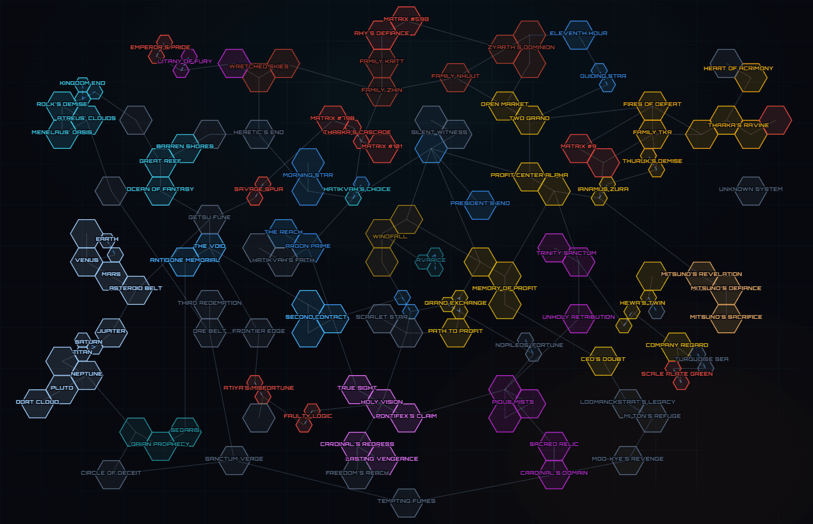

Game · Sandbox Sim
X4: Foundations
The deep-end space sandbox. These guides cut straight to the things that actually move the needle, free ships, early economy, station logistics. No 40-minute intros.
Guides
Where to start
Short, practical, current. Pick one and go.

Guide 01
// Free Ships
● Live
Abandoned & Derelict Ships and Locations
Every known spot to grab a free ship, how to claim it, what shape it's in, and which ones are worth the trip. From cheap scouts to full destroyers, just sitting there waiting to be claimed.
Open guide
// Interactive Map
● Live
The Full Universe Map
Every sector across all DLCs on one interactive hex map, coloured by faction, wired up with gate and super-highway links. Pan, zoom, search any system and click through its connections.
Open map

Map